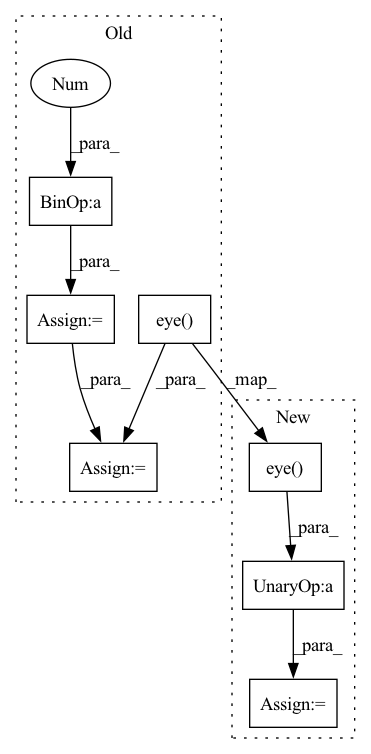

Pattern ID :10154
Before Change
mat = self.distance(x)
// remove self comparisons
mask = torch.eye( n, dtype=torch.bool)
mat = mat[~mask].view(n, n - 1 )
if not self.distance.is_inverted:
mat *= -1
mat = F.softmax(mat, dim=1)
y = y.repeat(n, 1)[~mask].view(n, n - 1)
target_probs = torch.sum(mat * y, dim=1, keepdims=True)
src_probs = torch.sum(mat * (1 - y), dim=1, keepdims=True)
probs = torch.cat([src_probs, target_probs], dim=1)
ent_loss = self.ent_loss_fn(probs)
After Change
mat = self.distance(x)
// remove self comparisons
mask = ~torch.eye(n, dtype=torch.bool)
mat = mat[mask].view(n, n - 1)
probs = get_probs(mat, mask, y, self.distance.is_inverted)
return get_loss(probs, self.ent_loss_fn, self.div_loss_fn, self.with_div)
In pattern: SUPERPATTERN
Frequency: 3
Non-data size: 7
Instances Fragment ID: 35921541
Project Name: kevinmusgrave/pytorch-adapt
Commit Name: 15f370b60db6caabe64d6dbe08f03e58acc7472f
Time: 2022-03-09
Author: tkm45@cornell.edu
File Name: src/pytorch_adapt/layers/ist_loss.py
M Class Name: ISTLoss
N Class Name: ISTLoss
M Method Name: forward(3)
N Method Name: forward(3)
M Parent Class: torch.nn.Module
N Parent Class: torch.nn.Module
M File Name: src/pytorch_adapt/layers/ist_loss.py
N File Name: src/pytorch_adapt/layers/ist_loss.py
M Start Line: 30
M End Line: 54
N Start Line: 49
N End Line: 61
Before Change
cs = np.zeros((n_clients, n_clients))
for i in range(n_clients):
for j in range(n_clients):
cs[i][j] = 1 - spatial.distance.cosine(feature_vec_list[i], feature_vec_list[j])
cs -= np.eye( n_clients)
// cs = smp.cosine_similarity(feature_vec_list) - np.eye(n_clients)
maxcs = np.max(cs, axis=1)
// pardoning
for i in range(n_clients):After Change
def fools_gold_score(cls, feature_vec_list):
import sklearn.metrics.pairwise as smp
n_clients = len(feature_vec_list)
cs = smp.cosine_similarity(feature_vec_list) - np.eye( n_clients)
maxcs = np.max(cs, axis=1)
// pardoning
for i in range(n_clients):
for j in range(n_clients): Fragment ID: 35921562
Project Name: fedml-ai/fedml
Commit Name: 6e38f5c840378693e9643065a302ba9b6bffb2ff
Time: 2022-11-07
Author: sshan0731@hotmail.com
File Name: python/fedml/core/security/defense/foolsgold_defense.py
M Class Name: FoolsGoldDefense
N Class Name: FoolsGoldDefense
M Method Name: fools_gold_score(2)
N Method Name: fools_gold_score(2)
M Parent Class: BaseDefenseMethod
N Parent Class: BaseDefenseMethod
M File Name: python/fedml/core/security/defense/foolsgold_defense.py
N File Name: python/fedml/core/security/defense/foolsgold_defense.py
M Start Line: 59
M End Line: 64
N Start Line: 59
N End Line: 60
Before Change
H1bar = H1 - H1.mean(dim=1).unsqueeze(dim=1)
H2bar = H2 - H2.mean(dim=1).unsqueeze(dim=1)
SigmaHat12 = (1.0 / (m - 1)) * torch.matmul(H1bar, H2bar.t())
SigmaHat11 = (1 - self.r) * (1.0 / (m - 1)) * torch.matmul(H1bar,
H1bar.t()) + self.r * torch.eye(o1,
dtype=torch.double,
device=H1.device).float()
SigmaHat22 = (1 - self.r) * (1.0 / (m - 1)) * torch.matmul(H2bar,
H2bar.t()) + self.r * torch.eye( o2,
dtype=torch.double,
device=H2.device) .float()
// performs the inverse square root of the covariance matrices by the cholesky decomposition. This is more stable than using SVD
SigmaHat11RootInv = torch.linalg.inv(torch.linalg.cholesky(_minimal_regularisation(SigmaHat11, self.eps)))
SigmaHat22RootInv = torch.linalg.inv(torch.linalg.cholesky(_minimal_regularisation(SigmaHat22, self.eps)))
Tval = torch.matmul(torch.matmul(SigmaHat11RootInv,
SigmaHat12), SigmaHat22RootInv)
trace_TT = torch.matmul(Tval.t(), Tval)
eigvals = torch.real(torch.linalg.eigvals(trace_TT))
eigvals = eigvals[torch.gt(eigvals, self.eps)]
corr = torch.sum(torch.sqrt(eigvals))After Change
SigmaHat11 = (1 - self.r) * (1.0 / (n - 1)) * torch.matmul(H1bar.T,
H1bar) + self.r * torch.eye(o1, device=H1.device)
SigmaHat22 = (1 - self.r) * (1.0 / (n - 1)) * torch.matmul(H2bar.T,
H2bar) + self.r * torch.eye( o2, device=H2.device)
// performs the inverse square root of the covariance matrices by the cholesky decomposition. This is more stable than using SVD
SigmaHat11RootInv = _compute_matrix_power(_minimal_regularisation(SigmaHat11, self.eps), -0.5)
SigmaHat22RootInv = _compute_matrix_power(_minimal_regularisation(SigmaHat22, self.eps), -0.5)
// SigmaHat11RootInv = torch.linalg.cholesky(torch.linalg.inv(_minimal_regularisation(SigmaHat11, self.eps)))
// SigmaHat22RootInv = torch.linalg.cholesky(torch.linalg.inv(_minimal_regularisation(SigmaHat22, self.eps)))
Tval = torch.matmul(torch.matmul(SigmaHat11RootInv,
SigmaHat12), SigmaHat22RootInv)
trace_TT = Tval.T @ Tval
eigvals = torch.linalg.eigvalsh(trace_TT)
eigvals = eigvals[torch.gt(eigvals, self.eps)]
corr = torch.sum(torch.sqrt(eigvals)) Fragment ID: 35921547
Project Name: jameschapman19/cca_zoo
Commit Name: 109657aa0c08d40d8571bc16e653094cb6206408
Time: 2021-07-14
Author: james.chapman.19@ucl.ac.uk
File Name: cca_zoo/deepmodels/objectives.py
M Class Name: CCA
N Class Name: CCA
M Method Name: loss(3)
N Method Name: loss(3)
M Parent Class:
N Parent Class:
M File Name: cca_zoo/deepmodels/objectives.py
N File Name: cca_zoo/deepmodels/objectives.py
M Start Line: 143
M End Line: 171
N Start Line: 145
N End Line: 166